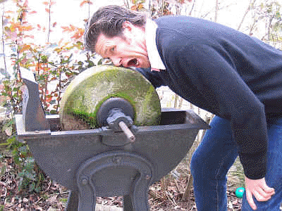

The following is a sponsored article by Larsen Halleck.
The idea of Asian men being spastic nerds who are utterly devoid of anything remotely resembling sexuality is a long-standing stereotype and one that, I admit in the interests of objectivity, has a substantive basis in reality—a few articles on this website even point it out. I also notice that there has been a steadily increasing Asian presence in the realms of social justice in recent years.
What if I were to tell you these things were related?
Yes, it turns out that any anger among Asian people in the West (particularly Asian men) is entirely rooted in sexual frustration. And the reason I know this is that I am half-Asian myself, and spent my teenage years as an angry incel.
In the interests of providing succor to this sexual frustration of preventing another beta-male rampage and making Asian people not hate white people, I have boiled down my hardscrabble life experience in the trenches of the sexual marketplace, my auto-didactic knowledge in various gentlemanly pursuits, and the mindset development that enabled me to not fall into the same self-pitying trap that caught seemingly every other mixed race person, into one highly digestible book:
THE ORIENTAL’S GUIDE TO SEX, STRENGTH, AND SATISFACTION
(And yes, I did choose the term “oriental” in a deliberate attempt to anger nice liberal people.)
What’s the deal?
The “deal” is to train Asian men living in the West to leave the mire of self pity, and vastly improve upon their sexlessness and awkwardness, regardless of whether or not those negative traits are based in nature or nurture.
To accomplish this, it will utilize the greatest (indeed, some would say the only) natural advantage an Asian man has: an unparalleled capacity and ability to work, to put their nose to the grindstone and expend the sheer, unrelenting sweat equity to improve themselves. “Work is the solution of his existence” and all that, and if Asian men’s utter lack of sexual attractiveness is indeed based in nature, I deign to overcome it with sheer, overwhelming amounts of rough and tough nurture.

You heard Jack London, the Asian man desires nothing more than access to toil—so use that to your advantage!
As a side note, I’m going to assume there’s probably at least one other dating or sex book on the market specifically pertaining to the Asian male problem, but since it would be a mainstream dating book, it probably sucks. This book has the Return of Kings seal of approval, so by definition it’s leagues ahead of its competitors.
In The Book, You Will Find…
Two chapters debunking whatever nonsense claims Asian men use to justify their anger. I analyze how, caterwauling about internment camps or Exclusion Acts or Hollywood representation aside, it all truly boils down to the fact that women don’t find you attractive, and that’s why you’re so goddamn angry. I also do a bit of analysis on why Asian men seem to gravitate to black culture, and why that’s stupid and you should feel bad for doing so.
Chapters on the fundamentals of physical fitness, martial arts, and fashion—things that can be fixed privately and without judgment, as I have repeatedly advocated.
A chapter on grooming—in which I explicitly demand “CUT YOUR FUCKING BOWL CUT!”, amongst other useful tips and tricks.
Chapters on how to utilize willpower training to stop being “spergy” in the stereotypical Asian manner, elocution lessons to alleviate the horrendousness that is the Asian accent, and body language to overcome your natural timidity,
Chapters on the ins and outs of dating: How to make yourself an interesting person, selecting a woman and dispelling myths of interracial dating and sex, what to do on a date, how to move the relationship into a sexual context, and how to bang like a champ.
And finally, a few chapters in which I get a little bit personal: I discuss how increasing my masculinity and focusing on self improvement has benefited my life and thus will benefit you as well. I then instruct the reader on how to deal with the haters who will inevitably arise with your self improvement. Again, speaking from my own experience, a lot of your “friends” will hate you for getting into fitness and self improvement—and, most shockingly of all, I answer the question that many people have had: why, exactly, are almost all “hapas” spastic, hysterical retards?
Is This Book For You?
I wrote this book explicitly to help a segment of the population that desperately needs it, but bear in mind that the overwhelming majority of the book has absolutely nothing to do with problems that relate specifically to Asian men. The tips I include are, for the most part, universal for any man who is spergy, awkward, shy, timid, physically weak, or slovenly. And implicitly, the book has an intent to bridge racial divisions by relieving the sexual frustration of Asian men and thus taking away any legitimate reason for them to hate white people, so even if you aren’t Asian, you might gain something from reading the book.
You may be wondering why I suddenly deigned to write this. To be honest, I don’t like the thought of being a “professional ethnic,” but “some have greatness thrust upon them” and all that. In other words, I saw a dire problem that needs to be solved, and since nobody else is doing it, it seemed like it was up to me.
In the short time the book has been out, it has already received three very positive reviews—the last of these can be found on its Amazon page.
Best of all, since it is the holiday season, I’ve slashed prices by 50%! Any other month of the year, you’d spend $20 on a paperback and $10 for an e-book. But for December, it’s going to be $10 for paperback, and only $5 for Kindle! Interesting in grabbing your copy? Click here to learn more about the book.
Advertise Your Product Or Site On Return Of Kings